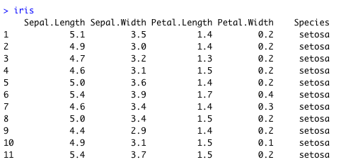
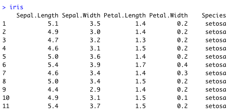

1. Tema 1: Preliminars¶
1.1. Introducció al curs¶
1.1.1. Em presento¶

PhD en EECS, U of Michigan, Ann Arbor
Cap de Data Science a letgo
10 anys experiència com a Científic de Dades (Data Scientist)
Qualsevol pregunta: contacteu-me per email o pel Campus Virtual!
Horaris tutoria: Dilluns i Dimecres de 15h a 17h (Envieu-me una invitació `Calendar`!)
1.1.2. Què és l’inferència estadística?¶

“Població” aquí es refereix al concepte estadístic, que definirem en breu. Per inferència entenem:
Inferir propietats d’un objecte (la població)
Deduïr validesa d’una premisa
a partir de d’un nombre finit de mostres
1.1.3. Exemples d’aplicació¶
Exemple 1: Caracterització de plantes (R. A. Fisher 1936)
Mesurem la longitud i amplada dels sèpals i els pètals de 50 exemplars de tres espècies diferents del gènere Iris
 

Quan solen mesurar els pètals de les Iris?
Hi ha alguna relació entre la morfologia i cada espècie d’Iris?
Donades les mesures d’un especímen nou, el podríem classificar en l’espècie correcta?
Quan solen mesurar els pètals de les Iris? \(\rightarrow\) Estimació
Hi ha alguna relació entre la morfologia i cada espècie d’Iris? \(\rightarrow\) Estimació
Donades les mesures d’un especímen nou, el podríem classificar en l’espècie correcta? \(\rightarrow\) Predicció
Exemple 2: Eficacitat d’un tractament profilàctic per als contactes de casos COVID-19 (O. Mitjà et al. 2020)
Seleccionem aleatòriament (en realitat l’experiment fa cluster-randomization) dos grups de pacients de COVID-19:

Al cap de 14 dies, contem quants individus en cada grup tenen símptomes i dónen positiu en una prova PCR.
Quants pacients hem de seleccionar per prendre una decisió sobre la població general? \(\rightarrow\) Mostreig
Com sabem si hem seleccionat els grups adequadament? \(\rightarrow\) Mostreig, Estimació
Com determinem si el tractament funciona? \(\rightarrow\) Tests d’hipòtesi, Intervals de confiança

Un assaig clínic busca falsificar l’hipòtesi nul.la: que el tractament no té efecte. No trobar evidència contra la mateixa no és un fracàs, és progrés científic! Font¶
Exemple 3: Tenim una plataforma de vídeo en streaming i volem millorar les nostres recomanacions. En particular volem saber si, donat un usuari i un producte, a l’usuari li agradarà.

Disposem d’un històric amb les següents dades:
Les evaluacions (0-5 estrelles) que cada usuari ha fet de les películes que ja ha vist
Informació sobre cada película (ex: gènere, actors)
install.packages('recommenderlab')
library(recommenderlab)
data(MovieLense)
# Veure primeres 3 evaluacions d'un dels usuaris
head(as(MovieLense[1,], "list")[[1]], 3)
> Toy Story (1995) GoldenEye (1995) Four Rooms (1995)
> 5 3 4
MovieLenseMeta[MovieLenseMeta$title=="Toy Story (1995)", ]
> title year url unknown Action Adventure ....
> 1 Toy Story (1995) 1995 http://us.imdb.com/M/title-exact?Toy%20Story%20(1995) 0 0 0
Donada una película que l’usuari encara no ha vist, podem determinar si li agradarà o no? \(\rightarrow\) Regressió
Si implementem un model estadístic de recomanacions de pel.lícules, com podem saber si millora l’experiència dels nostres usuaris o no? \(\rightarrow\) Mostreig, Tests d’hipòtesi, Estimació
1.1.4. Organització del curs¶
Classes de teoria: Estadística matemàtica
Rigor matemàtic: el just
Centrades en l’aplicació i l’aspecte computacional
Després de cada classe, penjaré les transparències/notes de classe al Campus Virtual
Warning
Es recomana la lectura prèvia dels temes a tractar abans de cada llicó
Classes de problemes: Resolució de problemes proposats per l’estudi autònom
Complement a les classes teòriques
Molt difícil (veure impossible) resoldre els problemes sense seguir les classes
Molt difícil aprovar sense treballar els problemes
Warning
Part de la teoria s’exposarà en els problemes
Classes pràctiques amb programari (R/Python)
Complement a les classes teòriques
Implementarem/experimentarem amb els mètodes descrits a classe
Instal.leu-vos Rstudio i/o Python 3+ (si feu servir Python, us recomano que instal.leu també Miniconda per gestionar-ne els paquets)
Warning
Per ser evaluat, el programari entregat haurà de córrer sense modificacions al meu ordinador.
Com ja sabeu, hem de mantenir l’ocupació de l’aula a 32
Mantindrem l’alternança entre Grup 1, Grup 2 i virtual (calendari)
Si m’ajudeu podem mirar de gravar les classes per penjar-les al Campus Virtual
Haurem de ser una mica flexibles

{kind=link}
{kind=link}
Hem estructurat el curs en 5 parts:
Tema 1. Preliminars (Setmanes 1 i 2)
Tema 2. Introducció a l’Inferència Estadística (Setmana 2, 3 i 4)
Tema 3. Estimació (Octubre)
Tema 4. Tests d’hipòtesi (Novembre)
Tema 5. Regressió i predicció (Desembre)
Per més detalls sobre el contingut de cada tema, consulteu la guia docent penajda al Campus Virtual
1.1.5. Bibliografia recomanada¶
Pel desenvolupament teòric, seguiré majoritàriament [Casella & Berger], excepte pel Tema 4. Tests d’hipòtesi, on seguiré més aviat el desenvolupament de [Rice]:
[Casella & Berger] Statistical Inference, 2nd Edition
[Rice] Mathematical Statistics and Data Analysis, J. Rice, 3rd edition
Bibliografia complementària:
[Efron & Hastie] Computer Age Statistical Inference
1.1.6. Avaluació curs¶
Avaluació continuada:
\(C\): Nota mitjana del control de problemes
\(P\): Control de pràctiques
Exàmens:
\(E_1\): Nota examen final
\(E_2\): Nota examen de recuperació
Si l’alumne es presenta a un dels dos examens:
\(N = 0.50 x \max\left(E_1, E_2\right) + 0.20 x C + 0.30 × P\)
(\(C, P, E_1, E_2, N \in \left[0, 10\right]\)) i aprova si \(N \geq 5\).
Si l’alumne no es presenta a cap dels dos examens:
\(N = \mbox{No Presentat}\) (independentment de \(C\) i \(P\))
Alguns dels problemes els proposaré durant les classes de teoria (exemple: completar una demostració).
En cualsevol cas, miraré de donar sempre un mínim de 5 dies entre l’enunciat dels problemes i l’entrega/correcció de sol.lucions.
Alguns dels problemes els corregirem a classe (després d’entregar-los).
Ho sento però per qüestions logístiques no acceptaré entregues amb retard.
Ho repeteixo, perquè quedi clar:
Tant les sessions de problemes com les de pràctiques són complementàries a les classes teòriques
/!\ part de la teoria s’exposarà en els problemes i les pràctiques
Molt difícil (veure impossible) resoldre els problemes sense seguir les classes
Molt difícil aprovar (aprendre!) sense treballar els problemes
IMPORTANT: Per ser evaluat, el programari de cada pràctica haurà de córrer sense modificacions al meu ordinador.
1.1.7. Algunes coses a tenir en compte¶

Aquest curs és la primera vegada que el preparo!¶
Pot haver-hi alguna errada a les slides/apunts
En particular en la traducció de termes en anglès <–> català
Qualsevol problema durant o després de la classe: arnau.tibau@uab.cat
1.1.8. Qüestionari¶
Durant el curs faré servir qüestionaris i exercicis per ajudar-vos a reflexionar i recordar el material que anem desenvolupant.
Comencem amb el primer :)
Calcular el nombre de pacients necessaris per un assaig clínic és un problema de _________.
Es podràn resoldre els problemes sense assistir a les classes de teoria?
Per determinar si un tractament clínic funciona, normalment es fa servir la tècnica dels _____________.
Si trec un 10 en l’avaluació de problemes i pràctiques i no em presento a l’exàmen final, puc aprovar?
Perquè una pràctica s’evalui, m’he d’assegurar que el meu codi ___________.
1.2. Espais i mesures de Probabilitat¶
1.2.1. Espai de Probabilitat¶
Durant el Tema 1 haurem d’anar una mica ràpid. És impossible fer un curs de probabilitat en 2 setmanes, però per sort ja n’heu fet un!
Un espai de probabilitat és un model matemàtic del resultat d’un experiment aleatori.
Consisteix en un triplet \(\left(\Omega, \mathcal{A}, P\right)\):
\(\Omega\): l’espai mostral, conjunt de resultats possibles d’un experiment
\(\mathcal{A} \subseteq 2^{\Omega}\): el conjunt d’esdeveniments, una família de subconjunts d’\(\Omega\)
\(P\): una mesura de probabilitat, una funció \(\mathcal{A} \rightarrow \left[0, 1\right]\)
Recordatori: \(2^{\Omega}\) és el conjunt de tots els sub-conjunts d’\(\Omega\), incloent-hi \(\emptyset\) i \(\Omega\).
1.2.2. Mesura de probabilitat¶
Una mesura de probabilitat \(P: \mathcal{A} \rightarrow \left[0, 1\right]\) ha de satisfer els següents axiomes (de Kolmogorov):
\(P\left(\Omega\right)=1\)
\(\forall A\in\mathcal{A}\), \(P\left(A\right)\geq 0\)
Per \(A_1,A_2,A_3, \cdots \in \mathcal{A}\) disjunts, \(P\left(\cup_i A_i\right) = \sum_i P\left(A_i\right)\)
Fixeu-vos que tenim llibertat a l’hora de definir \(\mathcal{A}\) pels esdeveniments que ens interessen (sempre i quan formin una \(\sigma\)-àlgebra.)
Això és una construcció axiomàtica de Probabilitat, formalitzada per Andrey Kolmogorov.
Noteu que no hem associat cap interpretació al significat físic dels valors de \(P\). Dues interpretacions típiques:
Frequentista: \(P\left(A\right)\) representa la frequència amb que observariem l’esdeveniment A si realitzéssim un gran nombre d’experiments
Bayesiana: \(P\left(A\right)\) representa la nostra certesa sobre l’ocurrència de l’esdeveniment A
Note
Les dues interpretacions no són completament ortogonals, però són l’orígen d’un munt de discussions filosòfiques i a vegades dogmàtiques. Si us interessa el tema us recomano Objections to Bayesian statistics.
Aquest no és un curs de probabilitat, per tant amagarem “detalls” important sota l’alfombra:
\(\mathcal{A}\) en realitat ha de ser una \(\sigma\)-àlgebra (conté \(\emptyset\), tancat per unió contable i complement)
Per a conjunts \(\Omega\) contables, podem tirar milles considerant \(\mathcal{A} = 2^{\Omega}\)
La cosa es complica quan \(\Omega\) no és discret (exemples: l’alçada d’una població, el nivell d’expressió d’un gen)
Recomano donar una ullada al [Casella & Berger] o a una altra de les referències bibliogràfiques per una intro no tècnica a les \(\sigma\)-àlgebres
1.2.3. Algunes propietats de les mesures de probabilitat¶
Teorema [Casella & Berger 1.2.8 i 1.2.9] Per una mesura de probabilitat \(P\) i qualsevol esdeveniments \(A, B \in \mathcal{A}\), tenim:
\(P\left(\emptyset\right)=0\)
\(P\left(A\right) \leq 1\)
\(P\left(A^c\right) = 1 - P\left(A\right)\)
\(P\left(B \cap A^c\right) = P\left(B\right) - P\left(A \cap B\right)\)
\(P\left(A \cup B\right) = P\left(A\right) + P\left(B\right) - P\left(A \cap B\right)\)
Si \(A \subseteq B\), aleshores \(P\left(A\right) \leq P\left(B\right)\)
Demostració: Punts (1), (2), (3), exercici :) (recomano començar pel 3er punt). Punts (4)-(6) tot seguit.
Pel punt (4), només cal observar que \(B = \left(B \cap A\right) \cup \left(B \cap A^c\right)\) (exercici). D’aquesta identitat i tenint en compte que \(B \cap A\) i \(B \cap A^c\) son disjunts, s’en dedueix l’expressió usant el 3er axioma de Kolmogorov.
Pel punt (5), utilitzem la següent identitat \(A \cup B = A \cup \left(B \cap A^c\right)\) i apliquem el punt (4).
Finalment el punt (6) el demostrem observant que si \(A \subseteq B\) aleshores \(A \cap B = A\) i que \(0 \leq P\left(B \cap A^c\right) = P\left(B\right) - P\left(A\right)\).
Els següents són propietats interessants relatives a col.leccions de conjunts:
Teorema [Casella & Berger 1.2.11] Si \(P\) és una mesura de probabilitat:
Per cualsevol partició \(C_1, \cdots, C_N\) d’ \(\Omega\), \(P\left(A\right) = \sum_i P\left(A \cap C_i \right)\)
\(A_1, A_2 \cdots, \in \mathcal{A}\), \(P\left(\cup_i A_i\right) \leq \sum_i P\left(A_i \right)\) (desigualtat de Boole)
Demostració: (1) tot seguit, (2) exercici.
Demostració punt (1): Recordem que una partició \(C_1, \cdots, C_N\) d’ \(\Omega\) és una col.lecció de conjunts tal que \(\cup_i C_i = \Omega\) i \(C_i \cap C_j = \emptyset, \forall i\neq j\).
Tenim doncs la següent cadena d’identitats:
i com que \(A \cap C_i\) i \(A \cap C_j\) son disjunts, el resultat s’obté considerant el 3er axioma de Kolmogorov.
1.2.4. Exemples d’espais de probabilitat¶
Experiment 1: Modelar el resultat de llançar un dau de 6 cares
\(\Omega = \left\{1, 2, 3, 4, 5, 6\right\}\)
\(\mathcal{A} = \left\{ \left\{1\right\}, \left\{2\right\}, \cdots, \left\{1, 2\right\}, \cdots \right\}\)
\(P\left(x\right) = \frac{1}{6}, x \in \Omega\)
Exercici: Com definirieu \(P\left(A\right)\) per a qualsevol \(A \in \mathcal{A}\)?
Resposta: \(P\left(A\right) = \sum_{x \in A} P\left(x\right)\). Podeu comprovar que aquesta construcció satisfà els axiomes.
Experiment 2: Escollir 100 persones i fer-els-hi una prova d’anticossos per SARS-COV-2
\(\Omega = \left\{+, -\right\}^{100}\)
\(\mathcal{A} = ?\)
\(P\left(A\right) = ?\)
Experiment 3: Escollir aleatòriament un estudiant d’questa classe i mesurar-ne la seva alçada
\(\Omega = \left[0, \infty \right)\)
\(\mathcal{A} = ?\)
\(P\left(A\right) = ?\)
1.3. Independència i probabilitat condicional¶
1.3.1. Probabilitat condicional¶
Donats \(A, B \in \mathcal{A}\), amb \(P\left(B\right) > 0\), \(P\left(A|B\right) = \frac{P\left(A \cap B\right)}{P\left(B\right)}\) (aquesta construcció satisfà els axiomes de Kolmogorov)

\(P\left(\cdot|B\right)\) és la restricció de \(P\) al subconjunt d’esdeveniments B. Alguns preguntes/petits exercicis interessants:
Tindria sentit definir \(P\left(A|B\right)\) si \(P\left(B\right) = 0\)?
Si \(A \cap B = \emptyset\), \(P\left(A|B\right)\)?
Com podem interpretar si \(P\left(A|B\right) =P\left(A\right)\)? Podeu donar un exemple “físic”?
Si \(A \subseteq B\), quina relació hi ha entre \(P\left(A|B\right)\) i \(P\left(A\right)\)?
1.3.2. Esdeveniments independents¶
Diem que \(A, B \in \mathcal{A}\), són independents si:
\(P\left(A \cap B\right) =P\left(A\right)P\left(B\right)\)
Això és equivalent a \(P\left(A|B\right) =P\left(A\right)\) si \(P\left(B\right) > 0\).
Algunes preguntes [Casella & Berger Teorema 1.3.9] (mirem de respondre per intució primer i matemàticament després):
Si \(A, B \in \mathcal{A}\) son independents, què podem dir de \(A, B^c\)?
Si \(A, B \in \mathcal{A}\) son independents, què podem dir de \(A^c, B^c\)?
Per exemple, l’independència conjunta no implica independència de parells:

Calculem \(P\left(A \cap B \cap C\right)\) i \(P\left(B \cap C\right)\)…
Nota: l’independència de parells tampoc implica independència mútua (veure Problema)
Per resoldre aquests problemes, fa falta una definició molt més estricta de la noció d’independència en conjunts d’esdeveniments:
Definició \(A_1, A_2 \cdots, \in \mathcal{A}\) són mutualment independents si per cualsevol subcol.lecció \(A_{i_1}, A_{i_2} \cdots, \in \mathcal{A}\), tenim que \(P\left(\cap_j A_{i_j}\right) = \Pi_j P\left(A_{i_j}\right)\)
(En aquest curs, quan parlem de mostres independents, estarem assumint independència mútua)
1.4. Variables aleatòries i funcions de distribució¶
1.4.1. Variable aleatòria¶
Definició Una variable aleatòria (v.a. pels amics) és una funció \(X : \Omega \to \mathbb{R}\).
Podem doncs definir una funció de probabilitat:
\(P_X\left(X \in A\right) = P\left(\left\{s\in \Omega: X\left(s\right) \in A \right\}\right)\)
que satisfà els axiomes de Kolmogorov:
\(\Omega\) contable: Fàcil, \(P_X\left(X \in A\right) = \sum_{s\in \Omega: X\left(s\right) \in A } P\left(s\right)\)
\(\Omega\) incontable: Una mica més complicat…
Enlloc de treballar amb \(P_X\left(X \in A\right)\), en general caracteritzarem les v.a. a través de les seves funcions de distribució, de massa o de densitat.
Revisitem l’Experiment 2 anterior (escollim 100 persones i fem una prova d’anticossos per SARS-COV-2)
Teniem que \(\Omega = \left\{+, -\right\}^{100}\)
Definim v.a. \(X : \left\{+, -\right\}^{100} \to \mbox{Nombre de +} \in \left[0, 100\right]\)
Exercici: Fent servir l’identitat \(P_X\left(X \in A\right) = \sum_{s\in \Omega: X\left(s\right) \in A } P\left(s\right)\), derivem \(P_X\left(X=k\right)\).
Revisitem l’Experiment 3. Escollim un estudiant d’aquesta classe i aquest cop mesurem la raó alçada/pes:
\(\Omega = \left(0, \infty \right) \times \left(0, \infty \right)\)
\(X: (x, y) \in \Omega \to \frac{x}{y}\)
Com calculariem \(P_X\left(X \in A\right)\)?
En la gran majoria de problemes haurem de fer una hipòtesi sobre el model aleatori de les observacions (hipòtesi que després haurem de validar comprovant la bondat de l’ajust)
1.4.2. Funció de distribució¶
Definició La funció de distribució cumulativa (f.d.c.) d’una v.a. es defineix com \(F\left(x\right) = P\left(X \leq x\right)\).
De fet qualsevol funció pot ser una f.d.c si compleix [Casella & Berger Teorema 1.5.3]:
\(\lim_{x\to -\infty} F(x) = 0\) i \(\lim_{x\to \infty} F(x) = 1\)
\(F(x)\) és no-decreixent
\(F(x)\) és contínua per la dreta (\(\lim_{x\to x_0^+} F(x) = x_0\))
El més important es que la f.d.c caracteritza únicament una variable aleatòria: si \(F_X = F_Y\), aleshores \(X\) i \(Y\) són idènticament distribuïdes [Casella & Berger 1.5.8 i 1.5.10]
1.4.3. Funció de massa o densitat de probabilitat¶
A voltes ens serà més pràctic treballar amb un altre objecte, la funció de massa de probabilitat (f.m.p.) \(p_X\) o de densitat de probabilitat (f.d.p) \(f_X\).
Cas discret: \(p_X\left(k\right) = P_X\left(X=k\right)\) (noteu que \(F_X\left(x\right) = \sum_{k=-\infty}^{x}p_X\left(k\right))\))
Cas “continu”: La funció \(f_X\) tal que \(F_X\left(x\right) = \int_{-\infty}^x f_X\left(t\right)dt\)
Aquí ens desviem una mica de la notació de [Casella & Berger] al fer servir \(p_X\) enlloc de \(f_X\) per la f.m.p.
Warning
Estem ometent molts “detalls” tècnics importants… Hi ha variables contínues per les que \(f_X\) no existeix.
Tal i com hem fist per la f.d.c, tenim un resultat similar per la f.d.p o la f.m.p: \(f_X\left(x\right)\) (\(p_X\left(k\right)\)) és una f.d.p (f.m.p) si i només si [Casella & Berger 1.6.5]:
\(f_X\left(x\right) \geq 0, \forall x\) (\(p_X\left(k\right) \geq 0, \forall k\))
\(\int_{\infty}^{\infty} f_X\left(x\right)dx = 1\) (\(\sum_{\infty}^{\infty} p_X\left(k\right) = 1\))
Per tant podem construir una f.d.p. a partir de qualsevol funció \(h\left(x\right)\) no-negativa, definint:
\(K = \int_{\infty}^{\infty} h\left(x\right)dx\) (també coneguda com funció de partició)
i \(f_X\left(x\right) = \frac{h\left(x\right)}{K}\). Això es fa servir per exemple en uns objectes anomentats Models Gràfics Probabilístics.
1.4.4. Exemple: funció de distribució i massa d’una v.a. geomètrica¶
Considerem la variable aleatòria corresponent a l’experiment de llançar una moneda fins que surti cara.
L’espai mostral és: \(\Omega = \left\{C, XC, XXC, \cdots \right\}\)
Definim la v.a. \(X\) com el nombre de creus que obtenim abans de la primera cara.
Si suposem que:
Cada llançament és independent de l’altre (pregunta: podeu imaginar una situació en que no ho fos)
La probabilitat de cara és \(p\)
Podem calcular \(p_X\left(k\right)=?\)
La f.m.p és la distribució geomètrica:
\(p_X\left(k\right) = P\left(\mbox{X}\right)^{k-1}P\left(\mbox{C}\right) = \left(1-p\right)^{k-1}p\)
A partir de la qual podem calcular la f.d.c:
\(F_X\left(x\right) = \sum_{k=1}^x p_X\left(k\right) = \sum_{k=1}^x \left(1-p\right)^{k-1}p\)
utilitzant l’identitat \(\sum_{k=1}^x \rho^{x-1}=\frac{1-\rho^x}{1-\rho}\), podem arribar a:
\(F_X\left(x\right) = 1 - \left(1-p\right)^x\)
Seria interessant que comprovéssiu que \(F_X\left(x\right)\) compleix les condicions per ser una f.d.c.
Una v.a. \(X\) és memoryless si:
\(P\left(X > m+n | X > m\right) = P\left(X > n \right)\)
Exercici: Comprovem que aquesta propietat es verifica per la \(p_X\left(k\right)\) geomètrica.
L’interpretació de la propietat és interessant, per exemple, en el contexte de la loteria: No haver guanyat després de jugar 10 cops no incrementa la probabilitat que guanyem en els següents 10 cops…
Aquesta propietat no és tant freqüent com podria semblar.
1.4.5. Exemples de distribucions discretes¶
1.4.6. Exemples de distribucions contínues¶
1.5. Esperança i moments¶
1.6. Desigualtats¶
1.7. Distribucions conjuntes i marginals¶
1.8. Problemes¶
1.8.1. Espais i mesures de Probabilitat¶
Conjunts
Demostreu les següents identitats: Donats dos subconjunts arbitraris A i B:
\(B = \left(B \cap A\right) \cup \left(B \cap A^c\right)\)
\(A \cup B = A \cup \left(B \cap A^c\right)\)
Conseqüències dels axiomes de probabilitat
Practiquem amb els axiomes per demostrar que:
\(P\left(\emptyset\right)=0\)
\(P\left(A\right) \leq 1\)
\(P\left(A^c\right)=1-P\left(A\right)\)
Desigualtat de Boole
Desigualtat de Bonferroni
La desigualtat de Bonferroni per dos esdeveniments \(A, B\) estableix que:
\(P\left(A \cap B\right) \geq P\left(A\right) + P\left(B\right) - 1\)
És útil quan la probabilitat conjunta dels esdeveniments no és fàcil de calcular (per exemple quan aquests no són independents).
Demostreu la desigualtat de Bonferroni
2. Per quin tipus d’esdeveniments no és trivial, és a dir, ens serveix per aproximar la probabilitat de l’esdeveniment conjunt?
Demostreu la desigualtat de Bonferroni en el cas genèric \(P\left(\cap_i A_i\right) \geq \sum_i P\left(A_i\right) - (n - 1)\)
4. Definiu un experiment i una col.lecció d’esdeveniments \(A_i\) on la desigualtat de Bonferroni ens donaria una cota inferior útil. Per exemple: Comparacions múltiples, controlar la probabilitat de que totes donguin “positiu”.
1.8.2. Probabilitat condicional i independència¶
1.8.2.1. Problema X: Independència de parells vs independència mútua¶
Exercici per entendre perquè independència a parells no implica independència mútua
1.8.2.2. Problema Z: Distribució binomial negativa¶
Una extensió de la distribució geomètrica que hem vist a classe és la distribució binomial negativa. Es correspon amb l’experiment bla bla bla
1.8.2.3. Problema Y: Esperança condicional i correcció del biaix de sel.lecció¶
Durant el curs hem vist un exemple de com el biaix de sel.lecció pot perjudicar els nostres estimadors. En alguns casos, es pot corregir l’efecte fàcilment.
Demostra que E(sum frac{1}{P}X) = E(X) bla bla bla
1.8.3. Variables aleatòries¶
Barreja de Gaussianes (Gaussian Mixture Models)